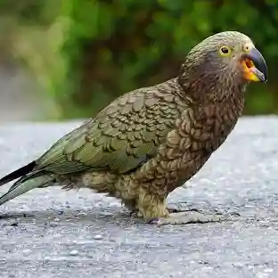
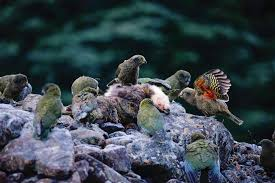

The kea is a bird from New Zealand.
It is a type of parrot.
Kea are known for being very smart and curious.
They are one of the most intelligent birds in the world.

Kea like to explore objects and solve problems.
They often use their beaks and feet to investigate things.
Kea are playful and sometimes interact with humans.
Kea live in cold mountain areas.
They are found on the South Island of New Zealand.
They can survive in snow and strong winds.
They eat plants, fruit, insects, and roots.
Kea are omnivores, which means they eat many different foods.
This helps them survive in harsh environments.
Kea have strong curved beaks.
Their feathers are mostly green.
They have bright orange feathers under their wings.

There are not many kea left in the wild.
People try to protect kea because they are endangered.
Kea are protected by law in New Zealand.
The kea is an important part of New Zealand's wildlife.